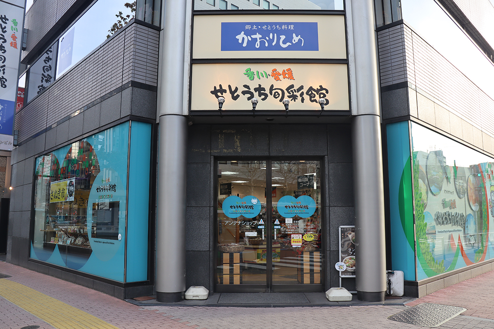
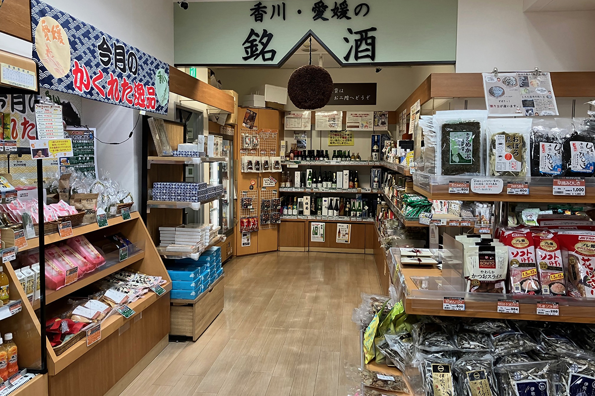
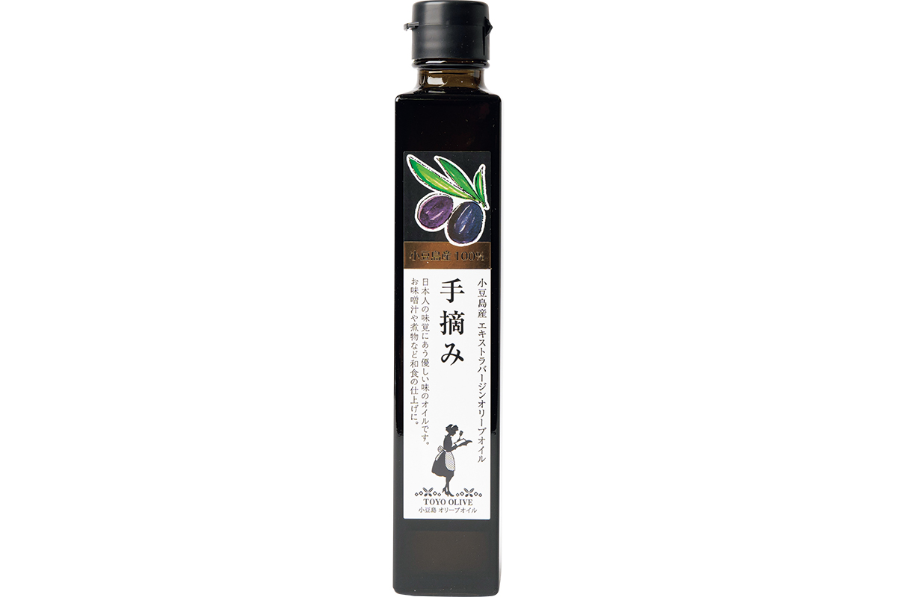
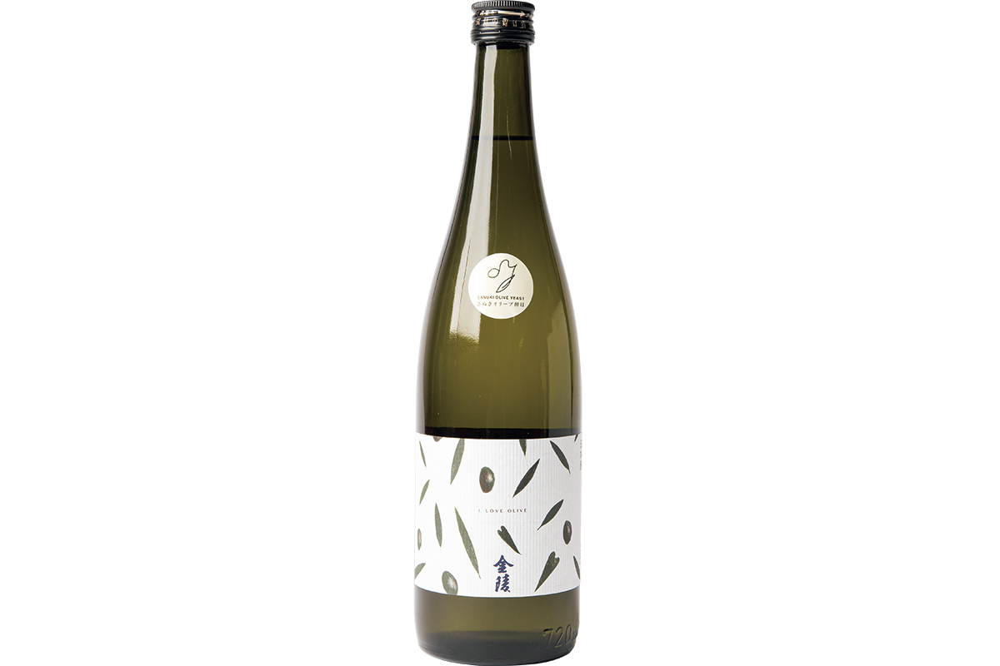
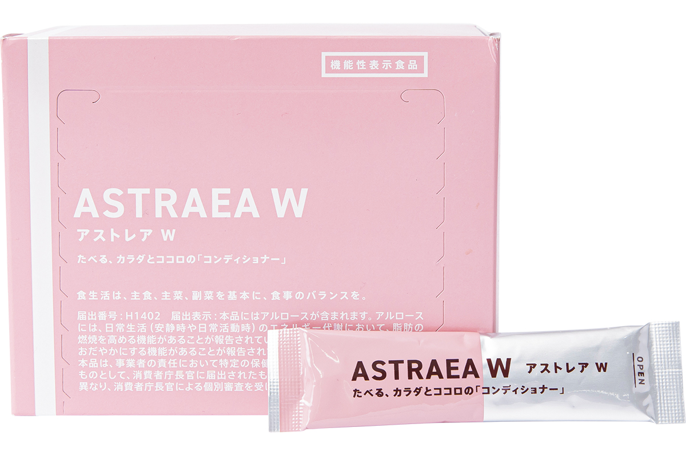

Токио · Симбаси · антенна-шоп
Сэтоути Сюнсайкан в Симбаси: три продукта Кагавы, которые стоит привезти

Антена-шопы собирают вкус целой префектуры под одной крышей. В Симбаси такой магазин делят Кагава и Эхимэ, и вот три продукта, ради которых сюда стоит зайти.
Дом удона
Добро пожаловать в «префектуру удона»
Кагаву омывает тёплое Внутреннее Японское море, которое местные зовут «бриллиантом мира». Отсюда и продукты, которыми славится префектура: удон Сануки (толстая пшеничная лапша, символ Кагавы), олива, ставшая цветком и деревом префектуры, хамачи, молодая рыба-желтохвост. Магазин работает с 2003 года рядом со станцией Симбаси: в будни сюда забегают офисные служащие, в выходные приходят семьями. За покупками загляните в ресторан на втором этаже, там подают тот самый удон Сануки.

Три покупки
Что советует сам магазин
Первое место: оливковое масло первого отжима с Сёдосимы, собранное вручную
Оливки с Сёдосимы собирают по одной ягоде и сразу отжимают масло. Вкус фруктовый и мягкий; масло получило высший знак качества по оливковому маслу префектуры Кагава для продукции с Сёдосимы.

Оливковое масло первого отжима с Сёдосимы, собранное вручную
- Цена
- 4 320 иен (182 г)
- Производитель
- компания Тоё Олив
- Телефон
- 0120-750-271 (бесплатный номер, звонки только из Японии)
- Сайт
- toyo-olive.com
Второе место: сакэ Кинрё Сэтоути Олив Дзюммаи Гиндзё
Сакэ на дрожжах, выделенных из оливкового плода, такое есть только в Кагаве. В аромате фруктовые ноты, во вкусе тропическая кислинка, и к любой еде этот сорт подойдёт легко.

Кинрё Сэтоути Олив Дзюммаи Гиндзё
- Цена
- 1 650 иен (720 мл)
- Производитель
- Нисино Кинрё
- Телефон
- 0120-64-1336 (бесплатный номер, звонки только из Японии)
Третье место: стики сахара ASTRAEA W
Редкий сахар появился благодаря сотрудничеству Университета Кагавы с местными компаниями и префектурой. Это подсластитель природного происхождения с нулевой калорийностью: он ускоряет сжигание жира и смягчает рост сахара в крови после еды.

Стики сахара ASTRAEA W
- Цена
- 3 240 иен (5,2 г, 30 стиков)
- Производитель
- компания Риа Суито
- Телефон
- 0120-976-912 (бесплатный номер, звонки только из Японии)
- Сайт
- raresweet.co.jp
Сэтоути Сюнсайкан Кагавы и Эхимэ
- Адрес
- Токио, район Минато, Симбаси, 2-19-10, здание Симбаси Марин, 1-й и 2-й этажи
- Телефон
- магазин продуктов: +81 3-3574-7792; ресторан, магазин ремёсел и мелочей: +81 3-5537-2684
- Часы работы
- магазин продуктов, ремёсел и мелочей: 10:00–20:00; ресторан: 11:00–23:00 (последний заказ в 22:00)
- Выходные
- нет